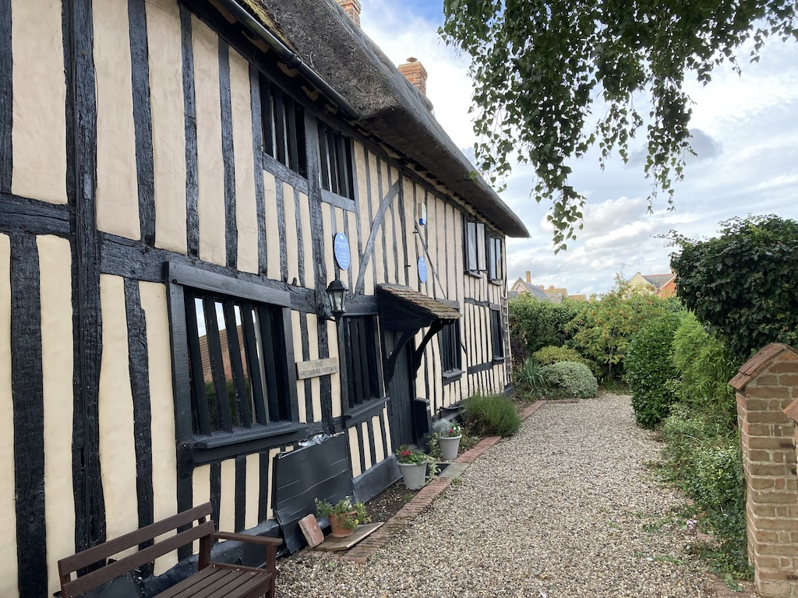
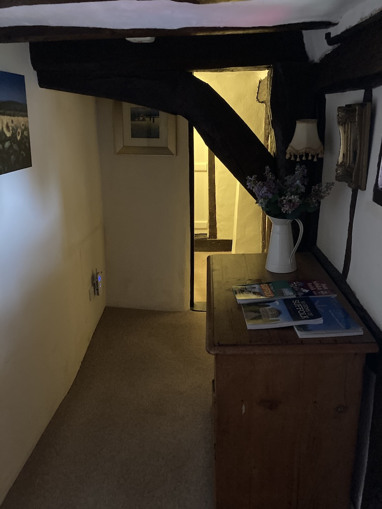
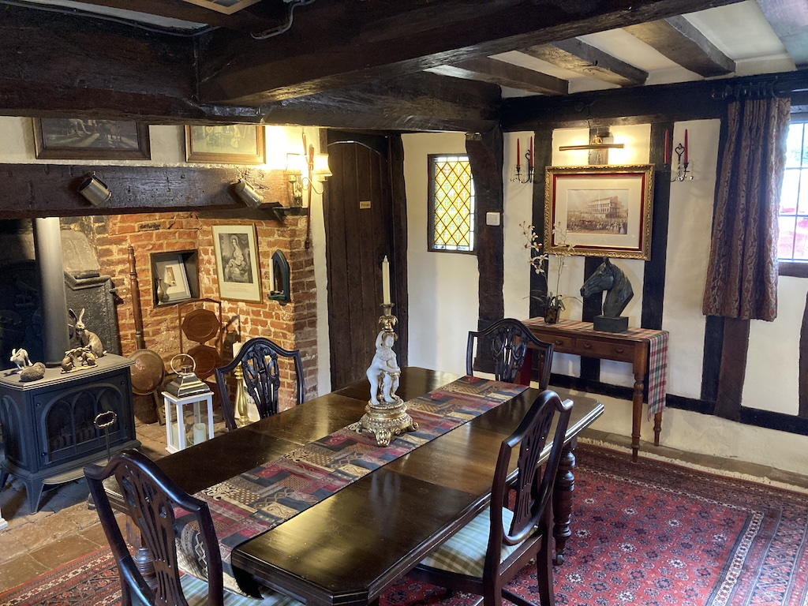
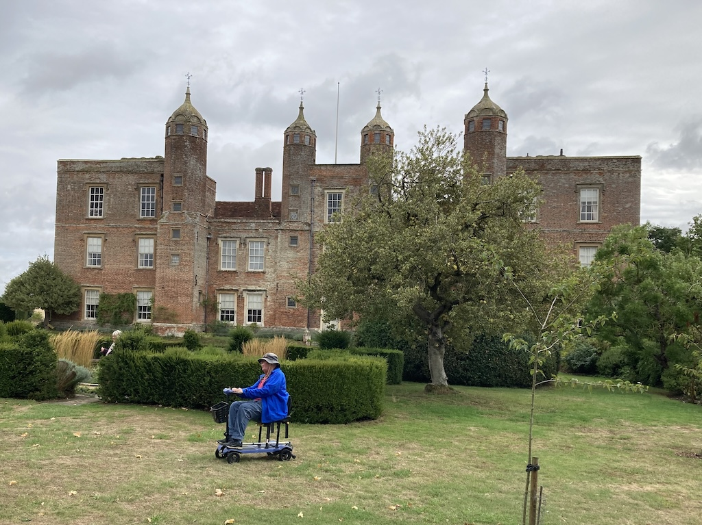
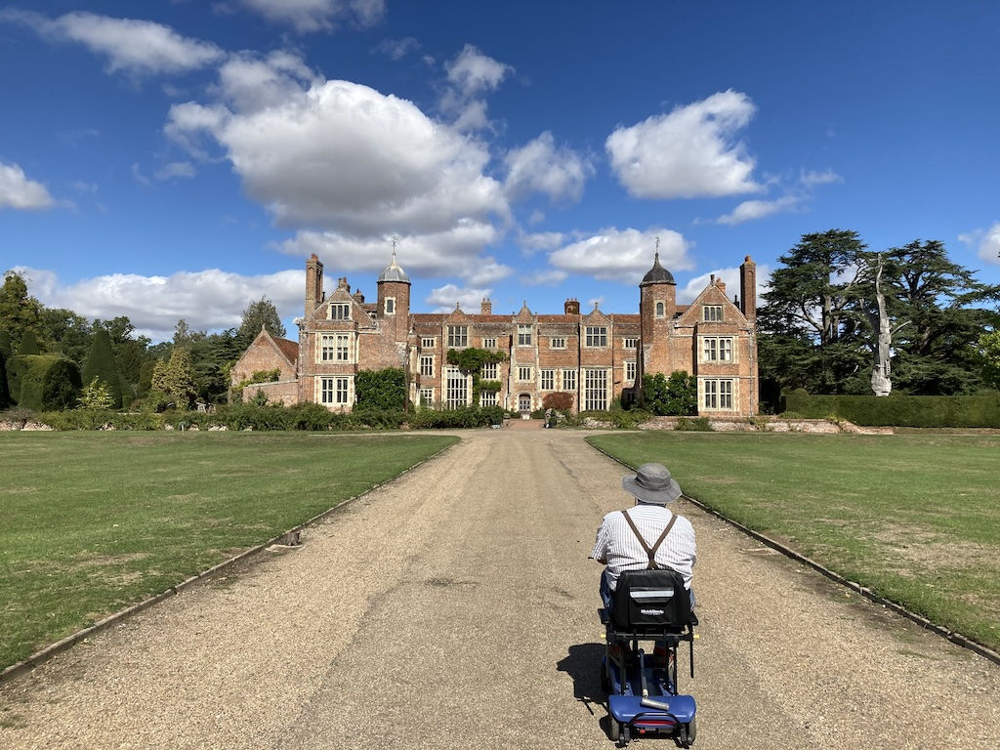
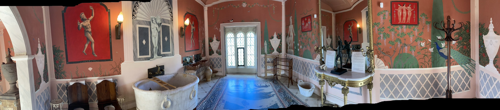

It was time for us to once again meet up with Kate and Dick, and this year we went back to Suffolk, to Glemsford, a small village to the north-west of Long Melford. We left at 10:30 on Thursday 3rd September, stopped at Clackets Lane for coffee and at Hatfield Forest for lunch. We arrived at Greyhound Cottage at 4:30, to find Kate and Dick already there.

The sprawling cottage had parts dating back to the fourteen hundreds. If fact the slope on our bedroom floor reflected that.The owners had moved there ten years ago, having sold a hotel in Scotland. Since the cottage had two bedrooms with en-suites they decided to start a B&B. Kate and Dick had the downstairs room at the back. It had a four-poster bed and a separate sitting area. We were upstairs, with windows to the front and rear. Luckily, although the floor sloped, the bed had been leveled.

There were quite a few low doorways. To get to our room we had to go up the steep stairs off the breakfast room and go under a beam.

Talking of breakfast, it was excellent, with fruit or cereal, followed by a choice of all the breakfast cooked items, and then tea and toast.
The owners were very friendly and helpful.
After a lot of chatting we walked to the Angel Inn for dinner. It was a busy place and we had a good meal.

On Friday we went to Melford Hall, a National Trust house on the outskirts of Long Melford. When we got there we realised that we had been there before. It seems that we went there in 2024 when we visited Sudbury.
However, we had a good introductory talk from one of the volunteers and then the volunteers in the rooms were helpful. The house is also interesting, was well presented and had good information. Dick stayed on the ground floor in his buggy, while the rest of us roamed the whole house.
After going around the house we had soup, cake and coffee in the cafe and then walked around the gardens.
Later, Kate drove us into Long Melford to the Cock and Bell pub. It was a bit rowdy and the food was typical pub grub, bit it was okay.

On Saturday, once again after a latish start, Kate took us to Kentwell Hall, a privately own, moated Elizabethan manor house just outside Long Melford. This was part of the Historic Houses Scheme. It was interesting because it was a mixture of history, and work that the present owners had done (over the past 50 years), some of which was just because they wanted to do that, such as the Roman bathroom (see panorama photo below) and the Chinese bedroom.

We had coffee and cake there before walking around the the gardens. We were back at Greyhound Cottage a little before four o'clock and, after a cup of tea and talking with Victoria (who were at Lee Summit) we joined K & D in the garden. Kay (the owner of the B&B) had booked a table for us at the Hare pub, opposite Kentwell Hall, for 7:30.
We had a good meal in pleasant surroundings, getting back at about ten o'clock, feeling very tired.
Sunday (the day of the South Downs Run!) was our return home. We had breakfast at our usual time of 8:30, but stayed until K & D arrived at 9:15. In fact we stayed in the dining room until they had finished breakfast, then we went up to our room and packed. We left at 10:30.
We arrived home at 2:45 after a good, uneventful journey, with just the one stop at Hatfield Forest for coffee. An excellent few days away.